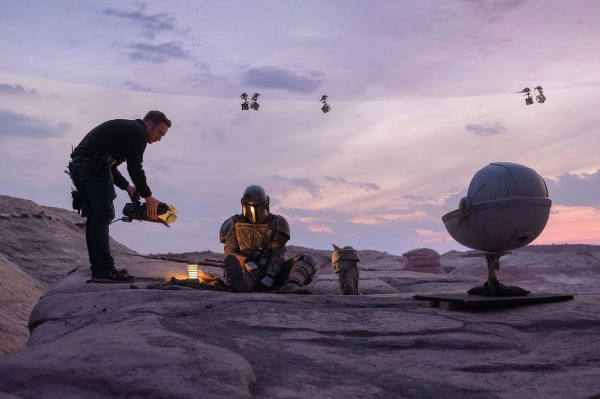

XR has been used heavily within the entertainment industry, utilizing it for sports, movies, tv shows, and etc. One of the most well known examples of XR being used is by the Star Wars show "The Mandalorian", where the Industrial Light & Magic company (ILM) used XR to empower both production teams and talent to achieve previously unthinkable feats like switching between an island and a mountain location within the same day or being able to shoot 10-hour dawn without interruptions. By creating the virtual environment with XR software and LED Volumes, both actors and production crew get to see the final look without needing to wait for post (production) and can easily adjust and make creative refinements during the shoot. ILM was able to find that script pages shot in LED Volumes were produced 30% to 50% faster than those shot in traditional sets. In this case, going all-in on virtual production meant that the time between seasons of the show could be cut by two to three months.
XR technology has allowed companies to expand the reach of their brand and create many different virtual productions, from creating captivating customer experiences to driving sales to enhancing commercial productions. One real world application is when PTC Corporation had a one-of-a-kind XR wall built which transported customers anywhere from a factory floor in Germany to an office space in Shanghai. With an LED wall at its center, the wall and a custom-built mobile robot pedestal system allowed for easy face-to-face interaction. Using the XR wall, PTC is able to do tailored product demos for individual prospects. For example, they can put the logo of a prospective customer up on the wall, creating a custom, tailormade and unforgettable experience for the customer.
Another real-world application within the business world was when China Central Television (CCTV) turned to Pixotope when they wanted to create a visually stunning and immersive news experience, which would grab the viewers attention. In order to do this, Pixotope created a LED wall in CCTV studio, measuring 50 meters long and 10 meters high, covering the entire floor with a half-circle with a diameter of 30 meters. CCTV used to the stage for the Consumer Rights Day show, where the show aired at the primetime slot on China's state television—reaching nearly every household in China.
On March 18, 2024 in Oxford, Ohio-In the newly constructed Richard M. McVey Data Science Building, Miami University proudly revealed its latest technological marvel — an extended reality (XR) stage for the education of students in real-time workflows. Meptik, one of the leaders in creative and technical services for virtual and immersive productions, spearheaded the design and installation of the stage, providing students with an unparalleled opportunity to craft innovative audience experiences. Within Miami University’s College of Creative Arts, the Emerging Technology in Business and Design undergraduate and graduate program students will now be able to explore the complexities of designing visuals for LED stages. They will also be able to learn how to manage LED stage technical integrations. This will be done as part of courses including Motion Design for Video Post Production and Immersive and Reactive Tools and Creating Visuals for Music Performance, under the teaching of Immersive and Reactive Lab and XR stage director at Miami University, Ben Nicholson.